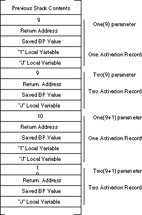
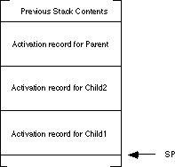
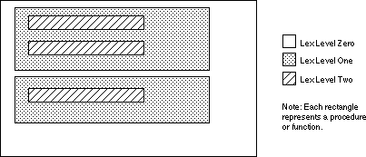
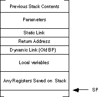
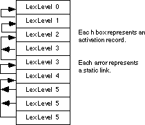

|
Table of Content | Chapter Twelve (Part 3) |
|
Table of Content | Chapter Twelve (Part 3) |
| CHAPTER TWELVE: PROCEDURES: ADVANCED TOPICS (Part 2) |
| 12.1.3 - Static
Links 12.1.4 - Accessing Non-Local Variables Using Static Links |
Pascal will allow procedure Two access to I
in procedure One. However, when there is the possibility of recursion there
may be several instances of i on the stack. Pascal, of course, will only let
procedure Two access the most recent instance of i. In the stack
diagram in the figure below, this corresponds to the value of i in the
activation record that begins with "One(9+1) parameter."
The only problem is how do you know where to find the activation record containing i?

A quick, but poorly thought out answer, is to simply index
backwards into the stack. After all, you can easily see in the diagram above that i is
at offset eight from Two's activation record. Unfortunately, this is not
always the case. Assume that procedure Three also calls procedure Two
and the following statement appears within procedure One:
If (Entry <5) then Three(Entry*2) else Two(Entry);
With this statement in place, it's quite possible to have
two different stack frames upon entry into procedure Two: one with the
activation record for procedure Three sandwiched between One and
Two's activation records and one with the activation records for procedures One
and Two adjacent to one another. Clearly a fixed offset from Two's
activation record will not always point at the i variable on One's
most recent activation record.
The astute reader might notice that the saved bp
value in Two's activation record points at the caller's activation record.
You might think you could use this as a pointer to One's activation record.
But this scheme fails for the same reason the fixed offset technique fails. Bp's
old value, the dynamic link, points at the caller's activation record. Since the caller
isn't necessarily the enclosing procedure the dynamic link might not point at the
enclosing procedure's activation record.
What is really needed is a pointer to the enclosing procedure's activation record. Many compilers for block structured languages create such a pointer, the static link. Consider the following Pascal code:
procedure Parent;
var i,j:integer;
procedure Child1;
var j:integer;
begin
for j := 0 to 2 do writeln(i);
end {Child1};
procedure Child2;
var i:integer;
begin
for i := 0 to 1 do Child1;
end {Child2};
begin {Parent}
Child2;
Child1;
end;
Just after entering Child1 for the first time,
the stack would look like the following:

When Child1 attempts to access the variable i
from Parent, it will need a pointer, the static link, to Parent's
activation record. Unfortunately, there is no way for Child1, upon entry, to
figure out on it's own where Parent's activation record lies in memory. It
will be necessary for the caller (Child2 in this example) to pass the static
link to Child1. In general, the callee can treat the static link as just
another parameter; usually pushed on the stack immediately before executing the call
instruction.
To fully understand how to pass static links from call to call, you must first understand the concept of a lexical level. Lexical levels in Pascal correspond to the static nesting levels of procedures and functions. Most compiler writers specify lex level zero as the main program. That is, all symbols you declare in your main program exist at lex level zero. Procedure and function names appearing in your main program define lex level one, no matter how many procedures or functions appear in the main program. They all begin a new copy of lex level one. For each level of nesting, Pascal introduces a new lex level. The figure below shows this:

During execution, a program may only access variables at a lex level less than or equal to the level of the current routine. Furthermore, only one set of values at any given lex level are accessible at any one time[4] and those values are always in the most recent activation record at that lex level.
Before worrying about how to access non-local variables using a static link, you need to figure out how to pass the static link as a parameter. When passing the static link as a parameter to a program unit (procedure or function), there are three types of calling sequences to worry about:
Calling sequences for the first two types of calls above are very simple. For the sake of this example, assume the activation record for these procedures takes the generic form shown in:

When a parent procedure or function calls a child program
unit, the static link is nothing more than the value in the bp register
immediately prior to the call. Therefore, to pass the static link to the child unit, just
push bp before executing the call instruction:
<Push Other Parameters onto the stack>
push bp
call ChildUnit
Of course the child unit can process the static link off the stack just like any other parameter. In this case, that the static and dynamic links are exactly the same. In general, however, this is not true.
If a program unit calls a peer procedure or function, the
current value in bp is not the static link. It is a pointer to the caller's
local variables and the peer procedure cannot access those variables. However, as peers,
the caller and callee share the same parent program unit, so the caller can simply push a
copy of its static link onto the stack before calling the peer procedure or function. The
following code will do this, assuming all procedures and functions are near:
<Push Other Parameters onto the Stack>
push [bp+4] ;Push static link onto stk.
call PeerUnit
If the procedure or function is far, the static link would be two bytes farther up the stack, so you would need to use the following code:
<Push Other Parameters onto the Stack>
push [bp+6] ;Push static link onto stk.
call PeerUnit
Calling an ancestor is a little more complex. If you are currently at lex level n and you wish to call an ancestor at lex level m (m < n), you will need to traverse the list of static links to find the desired activation record. The static links form a list of activation records. By following this chain of activation records until it ends, you can step through the most recent activation records of all the enclosing procedures and functions of a particular program unit. The stack diagram in The figure below shows the static links for a sequence of procedure calls statically nested five lex levels deep:

If the program unit currently executing at lex level five wishes to call a procedure at lex level three, it must push a static link to the most recently activated program unit at lex level two. In order to find this static link you will have to traverse the chain of static links. If you are at lex level n and you want to call a procedure at lex level m you will have to traverse (n-m)+1 static links. The code to accomplish this is
; Current lex level is 5. This code locates the static link for,
; and then calls a procedure at lex level 2. Assume all calls are
; near:
<Push necessary parameters>
mov bx, [bp+4] ;Traverse static link to LL 4.
mov bx, ss:[bx+4] ;To Lex Level 3.
mov bx, ss:[bx+4] ;To Lex Level 2.
push ss:[bx+4] ;Ptr to most recent LL1 A.R.
call ProcAtLL2
Note the ss: prefix in the instructions above.
Remember, the activation records are all in the stack segment and bx indexes
the data segment by default.
12.1.4 Accessing Non-Local Variables Using Static Links
In order to access a non-local variable, you must traverse the chain of static links until you get a pointer to the desired activation record. This operation is similar to locating the static link for a procedure call outlined in the previous section, except you traverse only n-m static links rather than (n-m)+1 links to obtain a pointer to the appropriate activation record. Consider the following Pascal code:
procedure Outer;
var i:integer;
procedure Middle;
var j:integer;
procedure Inner;
var k:integer;
begin
k := 3;
writeln(i+j+k);
end;
begin {middle}
j := 2;
writeln(i+j);
Inner;
end; {middle}
begin {Outer}
i := 1;
Middle;
end; {Outer}
The Inner procedure accesses global variables at lex level n-1 and n-2 (where n is the lex level of the Inner procedure). The Middle procedure accesses a single global variable at lex level m-1 (where m is the lex level of procedure Middle). The following assembly language code could implement these three procedures:
Outer proc near
push bp
mov bp, sp
sub sp, 2 ;Make room for I.
mov word ptr [bp-2],1 ;Set I to one.
push bp ;Static link for Middle.
call Middle
mov sp, bp ;Remove local variables.
pop bp
ret 2 ;Remove static link on ret.
Outer endp
Middle proc near
push bp ;Save dynamic link
mov bp, sp ;Set up activation record.
sub sp, 2 ;Make room for J.
mov word ptr [bp-2],2 ;J := 2;
mov bx, [bp+4] ;Get static link to prev LL.
mov ax, ss:[bx-2] ;Get I's value.
add ax, [bp-2] ;Add to J and then
puti ; print the sum.
putcr
push bp ;Static link for Inner.
call Inner
mov sp, bp
pop bp
ret 2 ;Remove static link on RET.
Middle endp
Inner proc near
push bp ;Save dynamic link
mov bp, sp ;Set up activation record.
sub sp, 2 ;Make room for K.
mov word ptr [bp-2],2 ;K := 3;
mov bx, [bp+4] ;Get static link to prev LL.
mov ax, ss:[bx-2] ;Get J's value.
add ax, [bp-2] ;Add to K
mov bx, ss:[bx+4] ;Get ptr to Outer's Act Rec.
add ax, ss:[bx-2] ;Add in I's value and then
puti ; print the sum.
putcr
mov sp, bp
pop bp
ret 2 ;Remove static link on RET.
Inner endp
As you can see, accessing global variables can be very inefficient[5].
Note that as the difference between the activation records increases, it becomes less and less efficient to access global variables. Accessing global variables in the previous activation record requires only one additional instruction per access, at two lex levels you need two additional instructions, etc. If you analyze a large number of Pascal programs, you will find that most of them do not nest procedures and functions and in the ones where there are nested program units, they rarely access global variables. There is one major exception, however. Although Pascal procedures and functions rarely access local variables inside other procedures and functions, they frequently access global variables declared in the main program. Since such variables appear at lex level zero, access to such variables would be as inefficient as possible when using the static links. To solve this minor problem, most 80x86 based block structured languages allocate variables at lex level zero directly in the data segment and access them directly.
[4] There is one exception. If you have a pointer to a variable and the pointer remains accessible, you can access the data it points at even if the variable actually holding that data is inaccessible. Of course, in (standard) Pascal you cannot take the address of a local variable and put it into a pointer. However, certain dialects of Pascal (e.g., Turbo) and other block structured languages will allow this operation.
[5] Indeed, perhaps one of the main reasons the C programming language is not block structured is because the language designers wanted to avoid inefficient access to non-local variables.
|
Table of Content | Chapter Twelve (Part 3) |
Chapter Twelve: Procedures: Advanced
Topics (Part 2)
27 SEP 1996